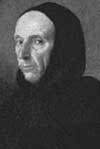

Girolamo Savonarola (1452-1498), İtalya’daki Floransa şehrini yönetimin altına alan bir Dominikan keşişiydi. Sadece dört yıl boyunca iktidarda kaldı. Buna rağmen pek çok sanatsal eseri yıkıp Hıristiyan ahlakından etkilenmiş katı yasaları dayatarak şehirde çok derin izler bıraktı. Başlangıçta çok geniş bir halk desteği olmasına rağmen 1498 yılında devrildi ve öldürüldü.

Savonarola, Kuzey İtalya’daki Ferrara’da dünyaya gelmişti. Yirmi bir yaşındayken ailesinin isteğine karşı gelerek Dominikan tarikatine katıldı. Hıristiyan öğretisine ihanet ettiğini düşündüğü Papalığın ve Roma Katolik Kilisesi’nin ateşli bir eleştirmeni oldu.
1482-1487 yılları arasında Floransa’da bulunsa da 1490 yılında şehre dönene dek pek etkisi olmadı. Avrupa’daki en zengin kentlerden biri ve Rönesans’ın kalbi olan şehir, çok dindar bir yer olarak kabul edilmiyordu. İktidardaki Medici ailesinin inşa ettirdiği, dünyanın en gösterişli saray ve anıtlarına ev sahipliği yapıyordu.
Savonarola’ya göre şehrin gelişen kültürü yozlaşmıştı. Buradaki sanat ve edebiyat anlayışı sadece günah işlemeyi daha cazip kılmaya yarıyordu. Büyük bölümü çıplaklık içeren resimlere ve şehrin homoseksüelliğe karşı gösterdiği toleransa tepkiliydi. Ateşli bir vaazında Mediciler’i açıkça suçladı. Şehirde onların yönetimine karşı gelişen hoşnutsuzluk dalgasından kendi iktidarını kurmak için yararlandı.
1494 yılında Fransa, Kuzey İtalya’yı işgal etti. Bu kargaşa sırasında Mediciler şehirden çıkarıldı. Savonarola arkasındaki halk desteğiyle şehri kontrol etmeye başladı. Son derece katı bir ahlaki program uygulamaya koydu. Homoseksüellik için ölüm cezası getirdi. Kitap ve sanat eserleri büyük bir ateşte yakıldılar.
Bu arada kilise aleyhine vaazlar vermeye devam etti. Bu vaazları onun 1497 yılında aforoz edilmesine neden oldu. Floransa’da büyüyen hoşnutsuzluğun farkına varınca, dürüstlüğünü ispat etmek için ateş testi yapılmasını önerdi. Ne var ki hemşehrileri blöfünü gördüler. 1498 yılı Nisan ayında aniden fikir değiştirdi. Buna rağmen yine de ateşle sınanmaktan kurtulamadı. O ay tutuklandı ve ölüm cezasına çarptırıldı. 1498 yılının Mayıs ayında kazığa bağlanarak yakıldı. Kısa süreli popülist teokrasi denemesi başarısız olmuştu.
Ek Bilgiler
1- Savonarola’nın yaktırdığı ateşler, Tom Wolfe’un (1931-) 1987 tarihli romanı “Bonfire of The Vanities”e (Beyhude Ateşler) ilham vermiştir. Kitapta 1980’lerde New York’ta yaşanan aşırılıklarla dalga geçiliyordu.
2- Savonarola teolojik meselelerde Katolik Kilisesi’nden farklılaşmamasına rağmen Vatikan’daki yolsuzlukları eleştirdiği için kimi Protestanlarca Reform’un öncüsü olarak kabul edilmiştir. Protestanlığın doğduğu yer olan Almanya’daki Worms şehrinde Martin Luther anıtının yanına bir heykeli dikilmiştir.
3- Keşişin ölümünden sonra Rönesans İtalyası’nda çok yaygın kullanılan bir katlanır sandalye modeline “Savonarola Sandalyesi” adı verilmiştir.